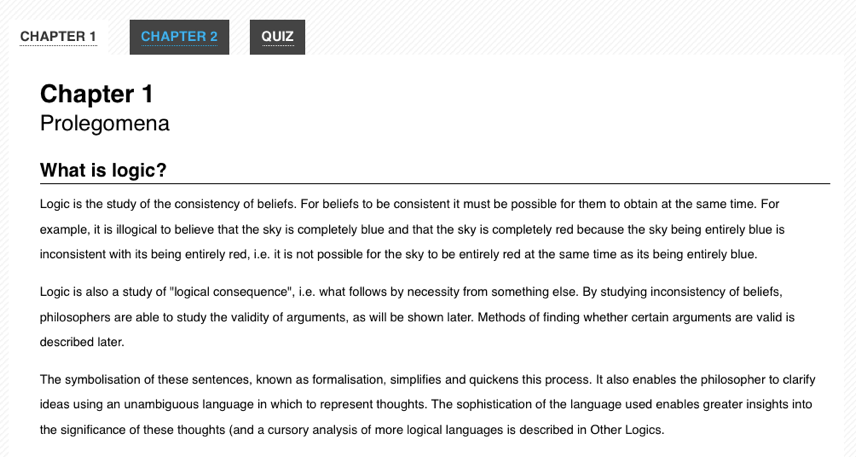

アクセシブルなウェブアプリケーションやウィジェットの概要
ほとんどの JavaScript ライブラリーでは、デスクトップで慣れ親しんだインターフェースの動作を模倣した、クライアントサイドウィジェットのライブラリーが提供されています。スライダー、メニューバー、ファイルリストビューなどは、JavaScript、CSS、HTMLの組み合わせで構築することができます。HTML4 の規格では、この種のウィジェットを意味的に記述する組み込みタグが提供されていないため、開発者は一般に <div> や <span> などの汎用の要素を使用することになります。この結果、デスクトップと同じように見えるウィジェットができますが、通常、マークアップには支援技術で使用するのに十分な意味づけの情報がありません。
問題点
ウェブページ上の動的コンテンツは、どのような理由であれ画面を見ることができないユーザーにとって特に問題になる可能性があります。株価表示、Twitter のフィード更新、進捗の表示やそれらに似たコンテンツは、支援技術 (AT) が認識できないかもしれない方法で DOM を変更します。ここが、ARIA が必要になるところです。
例 1: ARIA でラベルをつけずに作成したタブウィジェットのマークアップ。ウィジェットの外観や機能を示す情報は、マークアップ内にありません。
<!-- これはタブウィジェットです。マークアップだけを見て、どのようにしてわかるのでしょうか?-->
<ol>
<li id="ch1Tab">
<a href="#ch1Panel">Chapter 1</a>
</li>
<li id="ch2Tab">
<a href="#ch2Panel">Chapter 2</a>
</li>
<li id="quizTab">
<a href="#quizPanel">Quiz</a>
</li>
</ol>
<div>
<div id="ch1Panel">Chapter 1 content goes here</div>
<div id="ch2Panel">Chapter 2 content goes here</div>
<div id="quizPanel">Quiz content goes here</div>
</div>
例 2: タブウィジェットはどのようにして視覚的にスタイルが設定されるのでしょうか。ユーザーはそれを視覚的に認識するでしょう。しかし、支援技術向けに機械が読み取れる意味の情報はありません。 
ARIA
ARIAは、開発者がマークアップに特別な属性を追加することによって、ウィジェットをより詳細に記述することができるようにしています。標準的な HTML タグと、動的なウェブアプリケーションで得られるデスクトップスタイルのコントロールとの間のギャップを埋めるために設計された ARIA は、ほとんどの慣れた UI ウィジェットの挙動を記述する役割と状態を提供します。
警告: これらの多くは、ブラウザーが現代の HTML の機能に完全には対応していなかったため、後に追加されたものです。開発者は常に、ARIA を使用するよりも正しい意味づけの HTML 要素を使用することを優先すべきです。
ARIA 仕様書は 3 種類の属性に分けられています: ロール、ステート、プロパティです。ロールは HTML 4 において他の方法で利用できないウィジェット、例えばスライダー、メニューバー、タブ、ダイアログなどを説明します。プロパティはこれらのウィジェットの特徴、例えばドラッグ可能、必須の要素がある、関連づけられたポップアップがあるなどを説明します。ステートは要素について支援技術に伝える現在の対話状態、例えば動作中、無効、選択中、不可視などの状態を説明します。
ARIA の属性はブラウザーによって自動的に解釈され、オペレーティングシステムのネイティブなアクセシビリティ API に変換されるように設計されています。ARIA が提供されていると、支援技術は独自の JavaScript コントロールについて、デスクトップにおける同等物と同じ方法で、認識および対話をすることができます。
支援技術のユーザーがウェブベースのアプリケーションを使用するときに、デスクトップアプリケーションの動作に関するあらゆる知識を適用できますので、以前のウェブアプリケーションより一貫したユーザーエクスペリエンスをもたらす可能性を秘めています。
例 3: ARIA の属性を追加したタブウィジェットのマークアップ。
<!-- *これら* はタブです!-->
<!-- タブリストや各タブを表すために、role 属性を追加しました。-->
<ol role="tablist">
<li id="ch1Tab" role="tab">
<a href="#ch1Panel">Chapter 1</a>
</li>
<li id="ch2Tab" role="tab">
<a href="#ch2Panel">Chapter 2</a>
</li>
<li id="quizTab" role="tab">
<a href="#quizPanel">Quiz</a>
</li>
</ol>
<div>
<!-- タブのパネルを表すために追加した role および aria-labelledby 属性に注目してください。-->
<div id="ch1Panel" role="tabpanel" aria-labelledby="ch1Tab">
Chapter 1 content goes here
</div>
<div id="ch2Panel" role="tabpanel" aria-labelledby="ch2Tab">
Chapter 2 content goes here
</div>
<div id="quizPanel" role="tabpanel" aria-labelledby="quizTab">
Quiz content goes here
</div>
</div>
ARIA はすべての主要なブラウザーや多くの支援技術が幅広く対応しています。
表現の変化
動的な表現の変化には、コンテンツを表示させたり隠したりすることはもちろん、コンテンツの外見を変える (不正なデータを囲む赤色の境界線、チェックされたチェックボックスの背景色を変えるなど) ために CSS を使用することも含みます。
状態の変化
ARIA に、UI ウィジェットの現在の状態を定義する属性があります。例えば以下のとおりです （これだけではありません）。
aria-checked-
チェックボックスやラジオボタンの状態を示します。
aria-disabled-
要素は可視状態ですが、編集や他の操作ができないことを示します。
aria-grabbed-
ドラッグ & ドロップ操作で、オブジェクトが「つかまれている」状態を示します。
（ARIA のすべてのステートの一覧については、ARIA のステートとプロパティの一覧をご覧ください。）
開発者は UI ウィジェット要素の状態を示すために ARIA のステートを使用して、ステートの変化に基づく視覚的外見の変更に（スクリプトを使用して要素のクラス名を変更するのではなく） CSS の属性セレクターを使用してください。
可視性の変化
コンテンツの可視性を変える（例えば要素を隠したり表示したりする）とき、開発者は aria-hidden プロパティの値を変更するとよいでしょう。先に説明した手法を、display:none を使用して要素を視覚的に隠すという CSS を示すために使用してください。
これは、可視性の制御に aria-hidden を使用するツールチップの例です。この例では、入力フィールドに関する指示を収めたツールチップを持つシンプルなウェブフォームの例を示しています。例の中で関係する部分を、以下で説明します。
この例でツールチップ用の HTML は、以下に示す形になっています。9 行目で aria-hidden を true に設定しています。
<div class="text">
<label id="tp1-label" for="first">First Name:</label>
<input
type="text"
id="first"
name="first"
size="20"
aria-labelledby="tp1-label"
aria-describedby="tp1"
aria-required="false" />
<div id="tp1" class="tooltip" role="tooltip" aria-hidden="true">
Your first name is optional
</div>
</div>
このマークアップ用の CSS を以下に示します。ここでは独自のクラス名を使用せず、1 行目で aria-hidden 属性の状態のみを使用していることに注意してください。
div.tooltip[aria-hidden="true"] {
display: none;
}
aria-hidden プロパティを更新するための JavaScript は、以下のコードにある形になります。このスクリプトは aria-hidden 属性しか更新しないことに注意してください (2 行目)。独自のクラス名の追加や削除は不要です。
function showTip(el) {
el.setAttribute("aria-hidden", "false");
}
ロールの変化
ARIA では、開発者が要素の意味づけの役割を宣言することができます。要素の role は変更してはいけません。その代わり、元の要素を削除し、新しい role を持つ要素に置き換えてください。
例えば「インライン編集」ウィジェットについて考えてみましょう: これはコンテキストを切り替えることなく、ユーザーがその場でひとまとまりのテキストを編集できるコンポーネントです。このコンポーネントは、テキストの編集はできませんがアクティブ化が可能な「閲覧」モードと、テキストの編集が可能な「編集」モードがあります。開発者は、ARIA の role を button に設定した読み取り専用の text 型 <input> 要素で「閲覧」モードを実装して、要素を書き換え可能にするとともに「閲覧」モードの role 属性を削除する (<input> は自身のロールを意味として持っているため) ことで「編集」モードに切り替えようと考えるでしょう。
これを行ってはいけません。代わりに role が button である <div> や <span> といった、まったく別の要素を使用して「閲覧」モードを、また text 型の <input> 要素を要して「編集」モードを実装してください。
非同期のコンテンツ変更
メモ: 作成中です。ライブリージョン もご覧ください。
キーボード操作
開発者は、独自のウィジェットを作成する際にキーボードのサポートを見落とすことがよくあります。さまざまなユーザーにとってアクセシブルにするために、すべてのウェブアプリケーションやウィジェットはマウスを必要とせずにキーボードでも操作できるようにするべきです。実際、通常これはデスクトップにおける同様のウィジェットがサポートする慣習への準拠度を向上させて、Tab、Enter、スペース、矢印キーのあらゆる利点を獲得します。
伝統的に、ウェブにおけるキーボード操作は Tab キーに限定されてきました。ユーザーはページ内の各リンク、ボタン、フォームへ順番にフォーカスを当てるために Tab キーを、逆順に進むために Shift-Tab を押します。これは一次元、つまり一度に 1 つの要素で、進むまたは戻る操作です。かなり分量の多いページでは、キーボードのみ使用するユーザーは必要なセクションへアクセスするまでに何度も Tab キーを押さなければなりません。ウェブにおいてデスクトップスタイルのキーボード操作の慣習を実装すると、多くのユーザーで操作が劇的に高速化する可能性があります。
以下は、ARIA が有効なウェブアプリケーションで、どのようなキーボード操作が動作すべきかの概要です。
- Tab キーで、全体としてウィジェットへフォーカスを当てます。例えばメニューバーで Tab キーを押すと、メニューの最初の項目にフォーカスを当てるべきです。
- 矢印キーで、ウィジェット内での選択や操作をできるようにすべきです。例えば左または右矢印キーを使用すると、前や次のメニュー項目にフォーカスを移動できるようにします。
- フォームの中にないウィジェットは、 Enter やスペースキーでコントロールの選択やアクティブ化を行えるようにすべきです。
- フォーム内で、スペースキーはコントロールの選択やアクティブ化を、Enter キーはフォームの既定のアクションの実行を行えるようにすべきです。
- 迷った場合は作成するコントロールの、デスクトップにおける標準的な動作を模倣しましょう。
従って、前出のタブウィジェットの例では、ユーザーが Tab および Shift+Tab キーを使用してウィジェットのコンテナー（マークアップにおける <ol>）に出入りする操作を行えるとよいでしょう。キーボードのフォーカスがコンテナー内に入ったら、矢印キーで各々のタブ（<li> 要素）を行き来できるとよいでしょう。ここからは、プラットフォームによって慣習が異なります。 Windows では、ユーザーが矢印キーを押すと自動的に次のタブがアクティブ化されます。 macOS では、ユーザーは次のタブをアクティブ化するために Enter またはスペースキーを押します。キーボードで操作可能な JavaScript ウィジェット作成の包括的なチュートリアルで、このような動作を JavaScript で実装する方法を説明します。